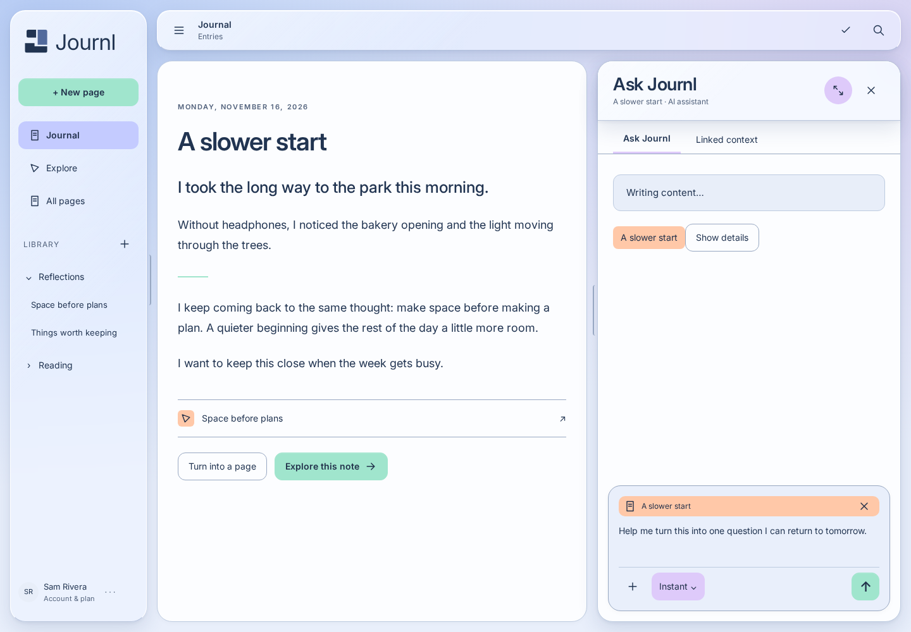
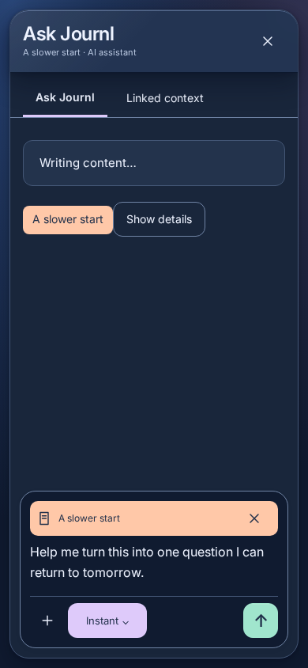
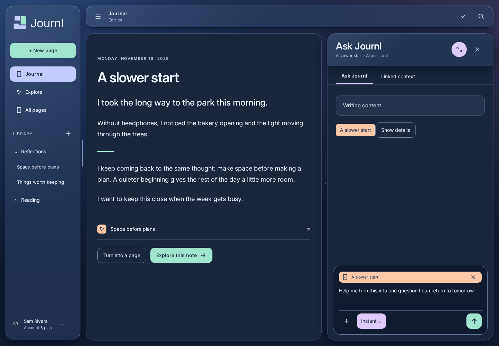
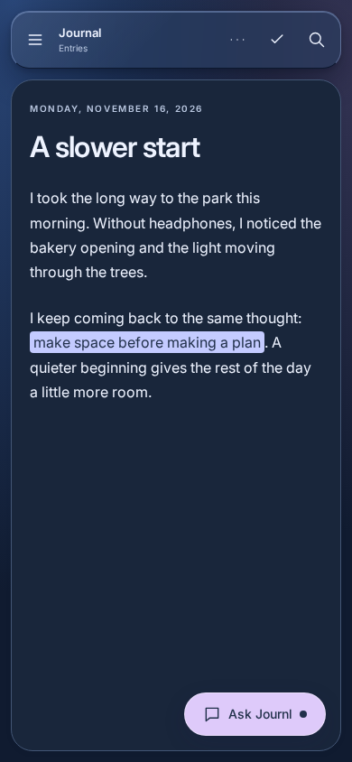
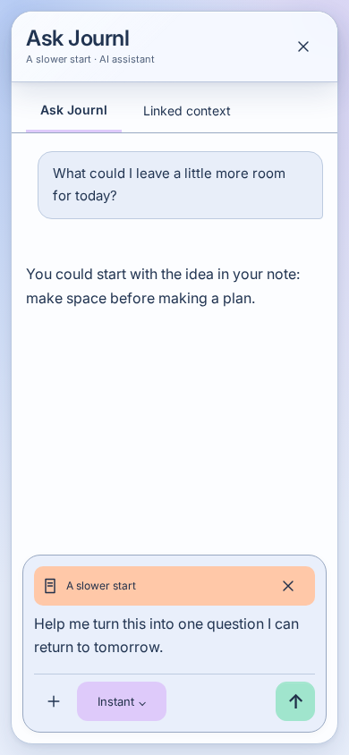

Chat
Approved application · approved logoEvery image below is an actual canonical PNG. Open an image for its full resolution. These are authored design scenes, not current-app browser captures.
Writing content
tool-writeActions and implementation pointers
+ New page · Journal · Explore · All pages · ⌄ · Reflections · › · Reading · Turn into a page · Explore this note · Ask Journl · Linked context · Show details · Instant ⌄ · ↑ · Entries · Timeline · Nov 16 · History · Close · Instant · Thinking
apps/web/src/components/assistant-ui/thread-components.tsx


SHA256 545c7c4f48ff6aba50093fc0a545749078339f5de751231544571e006fc561d4

SHA256 83b0c89a509c6f56e837b69c004c897a92342da90217bb6c3fee940ad29d063d


SHA256 cf5e1d87102058c9530907d326432f957ff4e84a2e829fa20acfcf2cfa817320


SHA256 770859e6df3d3cadcfdf0e805fe1c94cee301d183267bec34771647962aca29b
A slower start
chat-unreadActions and implementation pointers
+ New page · Journal · Explore · All pages · ⌄ · Reflections · › · Reading · Ask Journl · Today’s Journal · Close · Instant · Thinking
apps/web/src/components/assistant-ui/chat-unread-badge.tsxapps/web/src/components/assistant-ui/use-chat-unread.tsapps/web/src/app/(app)/@chatSidebar/_components/chat-sidebar-trigger.tsxapps/web/src/app/(app)/@chatDrawer/_components/chat-drawer-trigger.tsx

SHA256 d8a14698a814e613e52053167d2634eab498878ef672f2b053182d2fd499b50a

SHA256 49fb664977b50d175e9951f765256d12f8a022e7613c480ae76b9871fe7b9ee0

SHA256 ee0d5ac65806da66ad0e365dcf1802ad798585275dff0eec3c4a0e65cf332561


SHA256 2a16f00753505a7967dc39ebbcf54c21d4e0437d0ffe440d8cd9a6c30432547a
Ask Journl
chat-mobile-sheetActions and implementation pointers
+ New page · Journal · Explore · All pages · ⌄ · Reflections · › · Reading · Turn into a page · Explore this note · Ask Journl · Linked context · Instant ⌄ · ↑ · Entries · Timeline · Nov 16 · History · Close · Instant · Thinking
apps/web/src/app/(app)/@chatSidebar/_components/chat-sidebar-provider.tsx

SHA256 bfcb42777cebb9d2830f4b60f5e970b77cc403457c0c6c3151784724d402617a


SHA256 96383c1cd65a81892b4b94b498338da9021401f3cc1028599257225dbefdc514

SHA256 d14957df1026d98ca72ac54762390579614ab9efd2b49809899cab1f415f8772

SHA256 d4080bc785faee23cc95167450cc78445326bf35540bf351715ad16be9cb5ae8